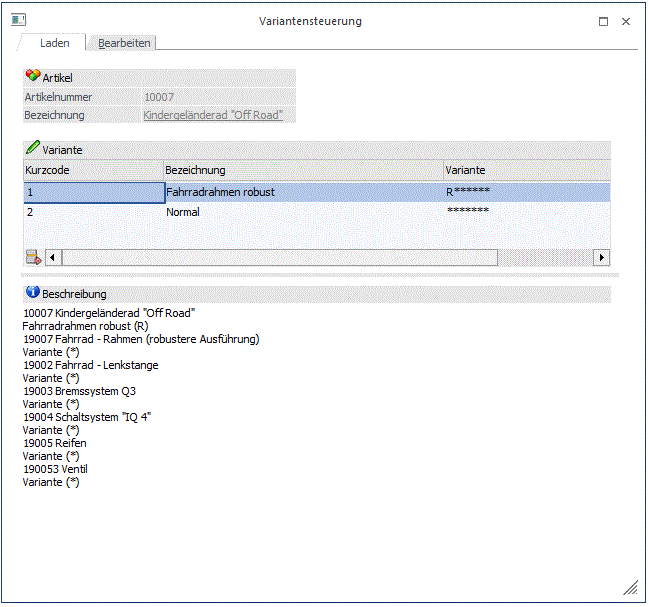
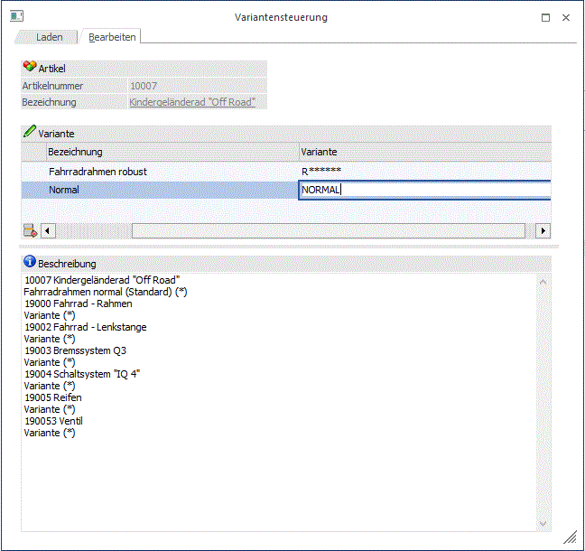

Die "Variantensteuerung" kann über die Variantendefinition (Button bzw. Option "Variantenstring speichern") oder über die Produktionsvorbereitung bzw. den Stückliste - Assistent (Button bzw.
Button ) geöffnet werden.
Folgende Möglichkeiten bietet die Variantensteuerung:
ü Abspeichern von Variantenstrings aus der Variantendefinition
ü Abspeichern von "manuell" aufgenommenen Variantenstrings
ü Bearbeiten von gespeicherten Variantenstrings
ü Laden von abgespeicherten Variantenstrings
Register "Laden"

In diesem Register können abgespeicherte Variantenstrings aus der Variantentabelle per Doppelklick ausgewählt werden. Das Laden von abgespeicherten Variantenkombinationen ist z.B. aus der Produktionsvorbereitung heraus möglich und erleichtert somit die Auftragsanlage.
Register "Bearbeiten"

In diesem Register können Variantenstrings manuell erstellt und Variantenkombinationen aus der Variantendefinition bzw. Produktionsvorbereitung abgespeichert werden.
Ø Kurzcode
An dieser Stelle muss für die Variantenkombination ein Kurzcode (20 Zeichen) erfasst werden.
Hinweis
Nach einer Kurzcode kann auch gesucht werden, und zwar in Verbindung mit dem "Laden"-Button beim Variantenfeld. Wenn man auf den "Laden"-Button klickt (der normalerweise das Variantensteuerungsfenster öffnet) wird anhand des eingegebenen Begriffs im Variantenfeld nach dem Variantenstring mit einer passenden Kurzcode gesucht (Volltext-Suche). Wird eine entsprechende Kurzcode gefunden, wird der Variantenstring automatisch als Variante übernommen. Diese Funktion steht zusätzlich zum herkömmlichen Varianten-Matchcode zur Verfügung.
Beispiel
Ein Variantenstring mit Kurzcode "BUNT" wird angelegt und gespeichert. Wenn "BUN" ins Variantenfeld eingegeben wird und der "Laden"-Button geklickt wird, wird der Variantenstring automatisch ins Variantenfeld übernommen.
Ø Bezeichnung
Hier kann eine Bezeichnung (100 Zeichen) für die Variantenkombination hinterlegt werden.
Ø Variante
An dieser Stelle wird der gewünschte Variantenstring hinterlegt. Dieses Feld kann über die Variantendefinition (Option "Variantenstring speichern") oder die Produktionsvorbereitung automatisch befüllt werden.
Ø Beschreibung
Beim Speichern von einem Variantenstring wird das Feld automatisch mit einer Auflistung von den in der Stückliste befindlichen Arbeitsschritten inkl. der gewählten Variantenkennzeichen befüllt. Der Inhalt kann ggf. auch manuell editiert werden, entweder gleich bei der Anlage des neuen Variantenstrings bzw. nachträglich im Fenster-Reiter "Bearbeiten".
Tabellenbuttons
Ø  Entfernen
Entfernen
Durch Anklicken dieses Buttons wird die aktive Variantenkombination gelöscht.
Buttons
Ø  OK
OK
Die ausgewählte Variantenkombination wird in das Eingabefeld übernommen bzw. neu angelegte Variantenstrings werden abgespeichert.
Ø Ende
Der Programmbereich wird verlassen. Neu angelegte Variantenkombinationen werden nicht abgespeichert.